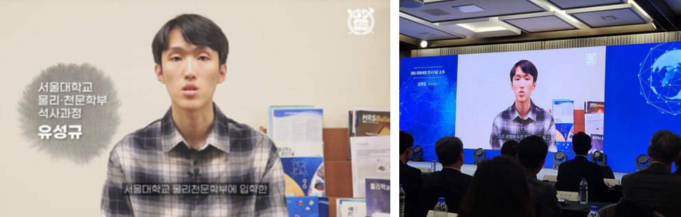

I was featured in a video about undergraduate research at the first SNU Research Day on December 4, 2024. The segment introduced my experience as an undergraduate research intern and highlighted the role of undergraduate research in developing the next generation of researchers.
Dec 4, 2024
Undergraduate research featured by SNU
